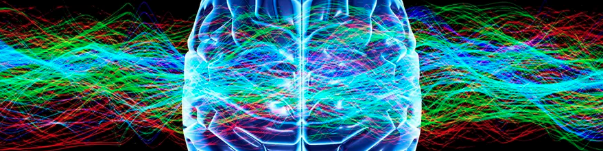

Keras: Classify Binary Times Series¶
Binary Detection of Epileptic Seizures Using a Cohort of Sequence of Electroencephalography (EEG) Readings.

Sequence data structures contain many observations (rows) for each sample (e.g. site, sensor, or patient). They are often used for grouping time-based observations into what is called a time series. However, sequences can also represent biological sequences like DNA and RNA.
The cardinality of many observations per sample changes the dimensionality of the data from 2D to 3D. This effectively adds an additional layer of complexity to all aspects of data preparation. In this notebook, you’ll see that, once a Dataset.Sequence has been ingested, the AIQC API allows you to work with multivariate 3D data as easily as if it were 2D. As an example, you can still apply encoders by dtype and column_name.
[2]:
import aiqc
from aiqc import datum
Example Data¶
[6]:
from aiqc import datum
[7]:
df = datum.to_pandas('epilepsy.parquet')
[8]:
df.head()
[8]:
| sensor_0 | sensor_1 | sensor_2 | sensor_3 | sensor_4 | sensor_5 | sensor_6 | sensor_7 | sensor_8 | sensor_9 | ... | sensor_169 | sensor_170 | sensor_171 | sensor_172 | sensor_173 | sensor_174 | sensor_175 | sensor_176 | sensor_177 | seizure | |
|---|---|---|---|---|---|---|---|---|---|---|---|---|---|---|---|---|---|---|---|---|---|
| 0 | 232 | 183 | 125 | 47 | -32 | -73 | -105 | -99 | -72 | -33 | ... | -202 | -303 | -365 | -389 | -406 | -401 | -366 | -251 | -143 | 1 |
| 1 | 284 | 276 | 268 | 261 | 254 | 241 | 232 | 223 | 212 | 206 | ... | 64 | 15 | -19 | -57 | -91 | -118 | -131 | -140 | -148 | 1 |
| 2 | 373 | 555 | 580 | 548 | 502 | 433 | 348 | 276 | 216 | 182 | ... | -1032 | -1108 | -803 | -377 | -13 | 172 | 246 | 206 | 156 | 1 |
| 3 | 791 | 703 | 538 | 76 | -535 | -1065 | -1297 | -1018 | -525 | -13 | ... | -396 | 135 | 493 | 601 | 559 | 400 | 193 | 3 | -141 | 1 |
| 4 | 436 | 473 | 508 | 546 | 587 | 615 | 623 | 615 | 596 | 574 | ... | 637 | 644 | 646 | 650 | 656 | 653 | 648 | 628 | 608 | 1 |
5 rows × 179 columns
a) High-Level API¶
Reference High-Level API Docs for more information.
[9]:
label_df = df[['seizure']]
[10]:
seq_ndarray3D = df.drop(columns=['seizure']).to_numpy().reshape(1000,178,1)
[19]:
from sklearn.preprocessing import StandardScaler
[18]:
splitset = aiqc.Pipeline.Sequence.make(
seq_ndarray3D = seq_ndarray3D
, seq_feature_encoders = [{
"sklearn_preprocess": StandardScaler()
, "columns": '0'
}]
, tab_DF_or_path = label_df
, tab_label_column = 'seizure'
, size_test = 0.22
, size_validation = 0.12
)
⏱️ Validating Sequences 🧬: 100%|████████████| 1000/1000 [00:00<00:00, 680120.64it/s]
⏱️ Ingesting Sequences 🧬: 100%|████████████████| 1000/1000 [00:08<00:00, 113.57it/s]
___/ featurecoder_index: 0 \_________
=> Info - System overriding user input to set `sklearn_preprocess.copy=False`.
This saves memory when concatenating the output of many encoders.
=> The column(s) below matched your filter(s) and were ran through a test-encoding successfully.
['0']
=> Done. All feature column(s) have encoder(s) associated with them.
No more Featurecoders can be added to this Encoderset.
[29]:
import keras
from keras.models import Sequential
from keras.layers import LSTM, Dense
from keras.callbacks import History
[20]:
def fn_build(features_shape, label_shape, **hp):
model = Sequential()
model.add(LSTM(
hp['neuron_count']
, input_shape=(features_shape[0], features_shape[1])
))
model.add(Dense(units=label_shape[0], activation='sigmoid'))
return model
[21]:
def fn_train(model, loser, optimizer, samples_train, samples_evaluate, **hp):
model.compile(
loss=loser
, optimizer=optimizer
, metrics=['accuracy']
)
model.fit(
samples_train['features'], samples_train['labels']
, validation_data = (samples_evaluate['features'], samples_evaluate['labels'])
, verbose = 0
, batch_size = hp['batch_size']
, epochs = hp['epochs']
, callbacks = [History()]
)
return model
[22]:
hyperparameters = {
"neuron_count": [25]
, "batch_size": [8]
, "epochs": [5, 10]
}
[23]:
queue = aiqc.Experiment.make(
library = "keras"
, analysis_type = "classification_binary"
, fn_build = fn_build
, fn_train = fn_train
, splitset_id = splitset.id
, repeat_count = 2
, hide_test = False
, hyperparameters = hyperparameters
, fn_lose = None #automated
, fn_optimize = None #automated
, fn_predict = None #automated
, foldset_id = None
)
[24]:
queue.run_jobs()
🔮 Training Models 🔮: 100%|██████████████████████████████████████████| 4/4 [02:09<00:00, 32.27s/it]
For more information on visualization of performance metrics, reference the Visualization & Metrics documentation.
b) Low-Level API¶
[6]:
df = datum.to_pandas('epilepsy.parquet')
[7]:
label_df = df[['seizure']]
[8]:
seq_ndarray3D = df.drop(columns=['seizure']).to_numpy().reshape(1000,178,1)
[9]:
dataset_tabular = aiqc.Dataset.Tabular.from_pandas(label_df)
[10]:
label = dataset_tabular.make_label(columns='seizure')
[13]:
dataset_sequence = aiqc.Dataset.Sequence.from_numpy(
ndarray_3D = seq_ndarray3D
, column_names = ['EEG']
)
⏱️ Validating Sequences 🧬: 100%|████████████| 1000/1000 [00:00<00:00, 761493.10it/s]
⏱️ Ingesting Sequences 🧬: 100%|████████████████| 1000/1000 [00:09<00:00, 110.77it/s]
[14]:
feature = dataset_sequence.make_feature()
[15]:
encoderset = feature.make_encoderset()
[20]:
encoderset = encoderset.make_featurecoder(
sklearn_preprocess = StandardScaler()
, columns = ['EEG']
)
___/ featurecoder_index: 0 \_________
=> Info - System overriding user input to set `sklearn_preprocess.copy=False`.
This saves memory when concatenating the output of many encoders.
=> The column(s) below matched your filter(s) and were ran through a test-encoding successfully.
['0']
=> Done. All feature column(s) have encoder(s) associated with them.
No more Featurecoders can be added to this Encoderset.
[21]:
splitset = aiqc.Splitset.make(
feature_ids = [feature.id]
, label_id = label.id
, size_test = 0.22
, size_validation = 0.12
)
[22]:
def fn_build(features_shape, label_shape, **hp):
model = Sequential()
model.add(LSTM(
hp['neuron_count']
, input_shape=(features_shape[0], features_shape[1])
))
model.add(Dense(units=label_shape[0], activation='sigmoid'))
return model
[23]:
def fn_train(model, loser, optimizer, samples_train, samples_evaluate, **hp):
model.compile(
loss=loser
, optimizer=optimizer
, metrics=['accuracy']
)
model.fit(
samples_train['features'], samples_train['labels']
, validation_data = (samples_evaluate['features'], samples_evaluate['labels'])
, verbose = 0
, batch_size = hp['batch_size']
, epochs = hp['epochs']
, callbacks = [History()]
)
return model
[24]:
algorithm = aiqc.Algorithm.make(
library = "keras"
, analysis_type = "classification_binary"
, fn_build = fn_build
, fn_train = fn_train
)
[25]:
hyperparameters = {
"neuron_count": [25]
, "batch_size": [8]
, "epochs": [5, 10]
}
[26]:
hyperparamset = algorithm.make_hyperparamset(
hyperparameters = hyperparameters
)
[27]:
queue = algorithm.make_queue(
splitset_id = splitset.id
, hyperparamset_id = hyperparamset.id
, repeat_count = 2
)
[30]:
queue.run_jobs()
🔮 Training Models 🔮: 100%|██████████████████████████████████████████| 4/4 [02:13<00:00, 33.34s/it]
Reference Low-Level API Docs for more information including how to work with non-tabular data and defining optimizers.